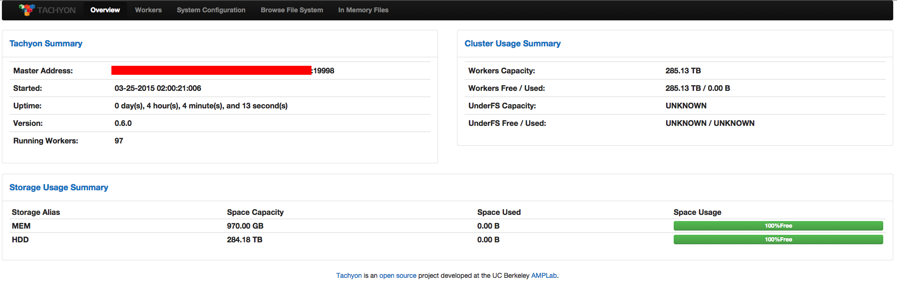
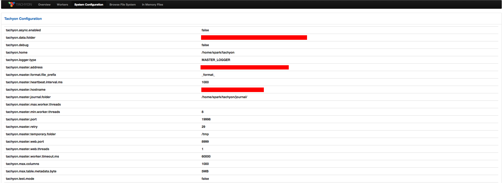
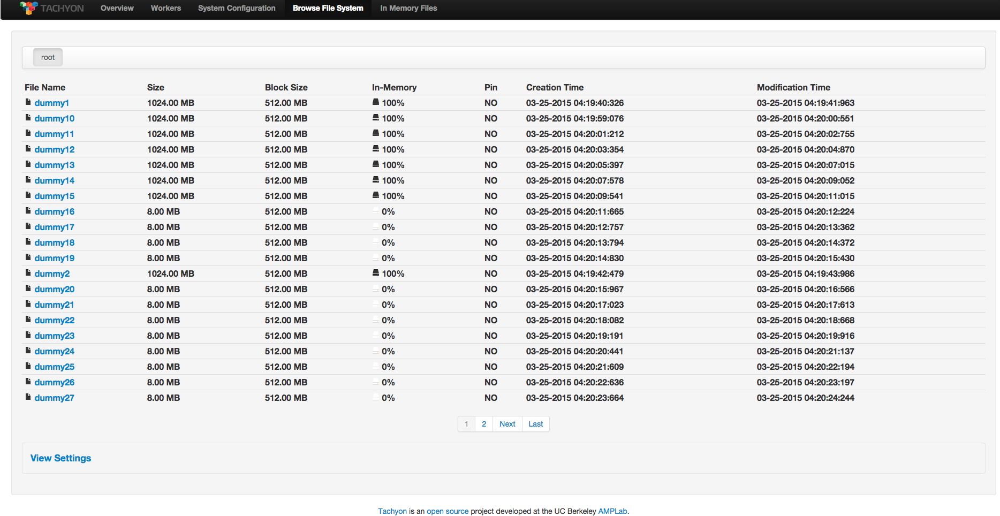
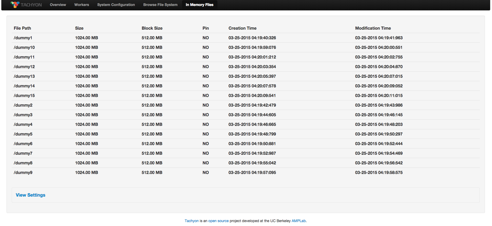
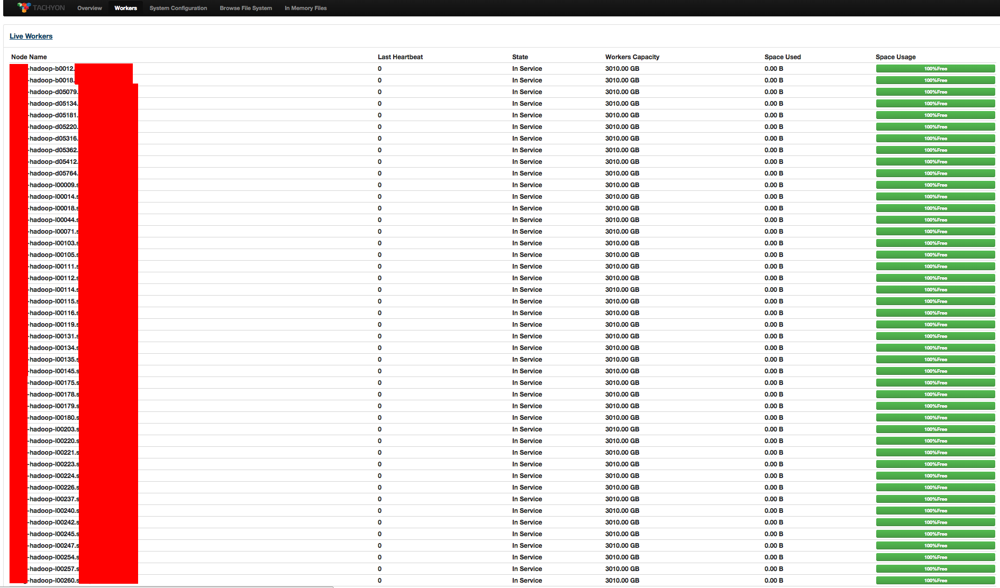

Web Interface
Tachyon has a user-friendly web interface allowing users to watch and manage the system. The master and workers all serve their own web UI. The default port for the web interface is 19999 for the master and 30000 for the workers.
Tachyon Master Web Interface
The Tachyon master serves a web interface to help manage the system. The default port for the
Tachyon master web interface is 19999, so the web interface can be viewed by visiting
http://<MASTER IP>:19999. For instance, if you started Tachyon locally, the master web interface
can be viewed by visiting localhost:19999.
The Tachyon master web interface contains several different pages, described below.
Home Page
The Tachyon master home page looks something like below:

The home page gives an overview of the system status. It includes the following sections:
-
Tachyon Summary
Tachyon system level information
-
Cluster Usage Summary
Tachyon storage information as well as under storage information. Tachyon storage utilization can be near 100%, but under storage utilization should not approach 100%.
-
Storage Usage Summary
Tachyon tiered storage information which gives a break down of amount of space used per tier across the Tachyon cluster.
Configuration Page
To check the current system configuration information, click “System Configuration” in the navigation bar on the top of the screen.

The configuration page has two sections:
-
Tachyon Configuration
A map of all the Tachyon configuration properties and their set values.
-
White List
Contains all the Tachyon path prefixes eligible to be stored in Tachyon. A request may still be made to a file not prefixed by a path in the white list. Only whitelisted files will be stored in Tachyon.
Browse File System Page
You can browse the Tachyon file system through the UI. When selecting the “Browse File System” tab in the navigation bar, you will see something like this:

Files in the current folder are listed, with the file name, file size, size for each block, the percentage of in-memory data, creation time, and the modification time. To view the content of a file, click on that file.
Browse In-Memory Files Piage
To browse all in-memory files, click on the “In-Memory Files” tab in the navigation bar.

Files currently in the memory tier are listed, with the file name, file size, size for each block, whether the file is pinned or not, the file creation time, and the file modification time.
Workers Page
The master also shows all known Tachyon workers in the system and shows them in the “Workers” tab.

The workers page gives an overview of all Tachyon worker nodes divided into two sections:
-
Live Nodes
A list of all the workers currently serving Tachyon requests. Clicking on the worker name will redirect to the worker’s web UI.
-
Dead Nodes
A list of all workers proclaimed as dead by the master, usually due to a long timeout waiting for the worker heartbeat. Possible causes include system restart or network failures.
Tachyon Workers Web Interface
Each Tachyon worker also serves a web interface to show worker information. The default port for the
worker web interface is 30000 so the web interface can be viewed by visiting
http://<WORKER IP>:30000. For instance, if you started Tachyon locally, the worker web interface
can be viewed by visiting localhost:30000.
Home Page
The home page for the Tachyon worker web interface is similar to the home page for the Tachyon master, but shows information specific to a single worker. Therefore, it has similar sections: Worker Summary, Storage Usage Summary, Tiered Storage Details.
BlockInfo Page
In the “BlockInfo” page, you can see the files on the worker, and other information such as the file size and which tiers the files is stored on. Also, if you click on a file, you can view all the blocks of that file.